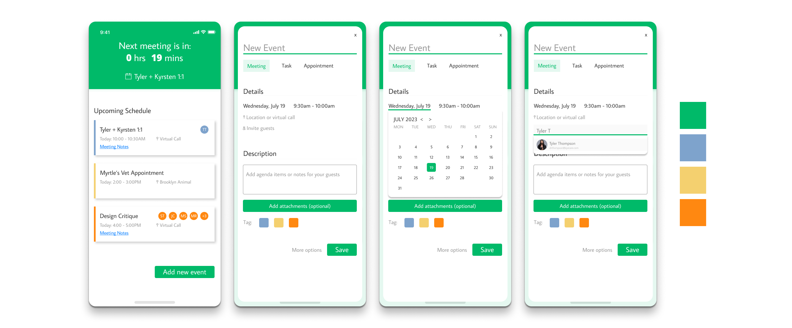
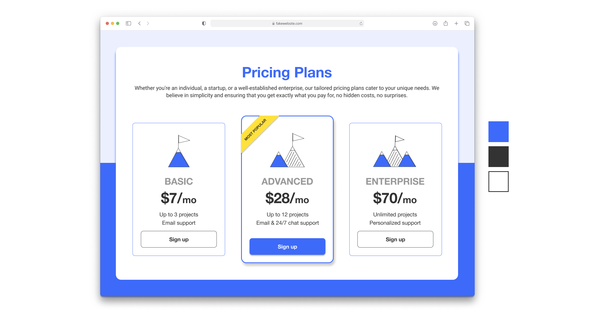
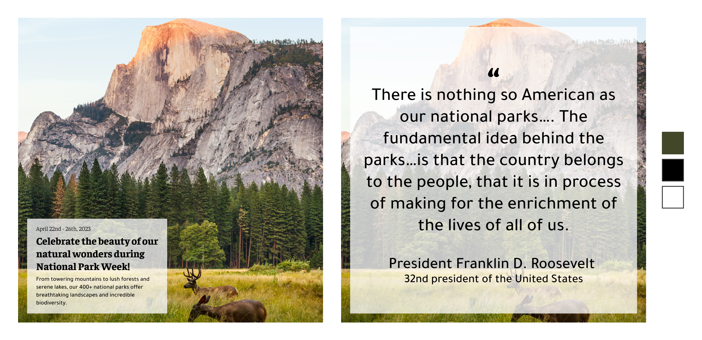

Designing One Prompt at a Time
Completing 30+ design prompts for digitial and print products
Project Timeline: 4 weeks
My Role: UX/UI Designer
Tools: Figma
Key pages of a calendar app - a schedule reminder and new event creation pages.
During the development of these key pages, my primary focus was on the dropdowns and how they would overlay the event creation page. To achieve this, I utilized auto layout and shadow effects, resulting in intuitive dropdown elements that seamlessly integrate with the page.
A credit card checkout module for Home Vista, a fake Airbnb-type service. This module displays the rental property's location, dates, and total cost, providing users with a clear summary. Users have the option to complete the checkout process using either a credit card or debit card.
The credit card checkout module is usually a straightforward process, but I wanted to seize this opportunity to enhance the overall experience by experimenting with imagery. By using an image of the rental property as the foundation for the page, the checkout experience is elevated and modernized. This approach moves away from the typical plain and lifeless checkout module, creating a more engaging and visually appealing experience for users. The biggest design challenge for me here was finding the right balance between the module, image, and cost details.

A simple sign-up form for a fake dog walking service called “Rover’s Route”, that requires an account to schedule walks for your 4-legged friend. The form includes inputs for Name, Email, and Password and gives users the ability to sign up using their Gmail address.
By utilizing familiar sign-up form structures, I was able to create an experience that aligns with the user's expectations and reduces friction and frustration. The dual-sided interface on desktop effectively showcases the brand's personality without overwhelming the user. Since the structure was fairly straightforward, I focused on developing components specifically for the text fields, rather than exploring alternative structures.

A simple 404 page that navigates users back to the home page.
A 404 page provides an ideal chance to alleviate user frustration by incorporating enjoyable elements, employing straightforward language, and offering a clear way out. I took advantage of this and utilized a free library to create my own illustrated character and coupled it with an explanation and a button navigating the users back to the home page.

The above-the-fold experience for the website of Stampede, Pittsburgh's most electrifying country band. This experience prominently features links to their about page, schedule, YouTube channel, and social media platforms.
The "new” Stampede concept served as a great source of inspiration for me while developing these designs. My goal was to highlight each band member without being overwhelming. To achieve this, I opted for a simple yet modern color scheme and font typography - elevating their existing branding. Additionally, I used black-and-white photos of each member to create a unified above-the-fold experience. The above-the-fold experience is relatively straightforward on desktop. However, on mobile devices, I incorporated a carousel feature that allows users to cycle through individual photos of the band, which help introduce the new Stampede.

A recipe card for a Fig & Rosemary Gin Smash.
Just like the credit card checkout module, my goal with this design was to emphasize the visual aspect. The entire concept, including the color scheme, typography, and subject matter, revolved around a single image. By incorporating shadow effects and different levels of opacity, I was able to create an aesthetically pleasing recipe card.

A pricing plan page that compares three different package tiers.
This was a great exercise on developing a comparative experience that is visually appealing, yet informative. Each of the three cards provides the title, cost, and key features of the package - items that can be compared across the three packages. The use of "growing" icons provides visual cues about each of the tiers with the most popular package also being identified with a color-popping banner.
An Instagram post celebrating "National Park Week" with a quote from President Franklin D. Roosevelt.
Drawing inspiration from educational Instagram posts, my goal was to craft a visually captivating and informative Instagram post. Yosemite National Park holds a special place in my heart, so I decided to feature its breathtaking views while sharing exciting details about "National Park Week" - an event that took place in April of this year. To complete the message, I included a powerful quote from President FDR to set the tone.
A convenient app for your favorite lunch spot, enabling you to order your food ahead of time. The following designs showcase the process of ordering a sandwich through the app's intuitive flow.
Taking inspiration from some of my favorite food ordering apps, I focused on developing an intuitive flow with a vibrant color scheme and imagery that screamed “cool cafe”. This is a great opportunity to further explore micro-interactions associated with scrolling and swiping behaviors within the app.